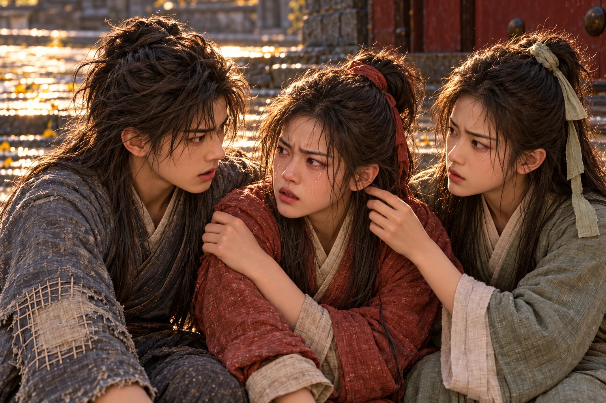
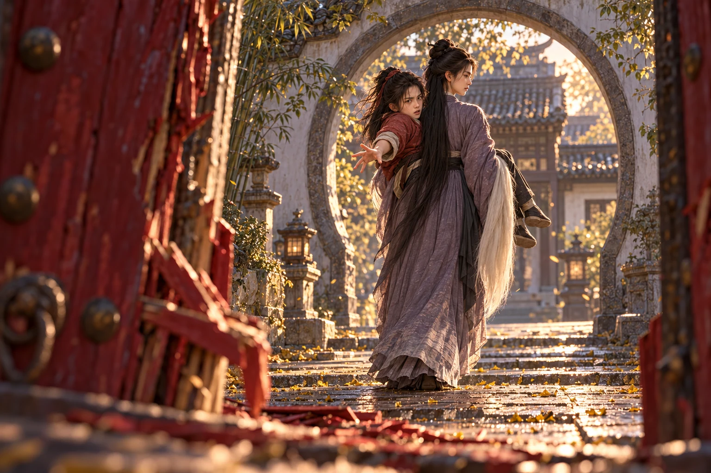
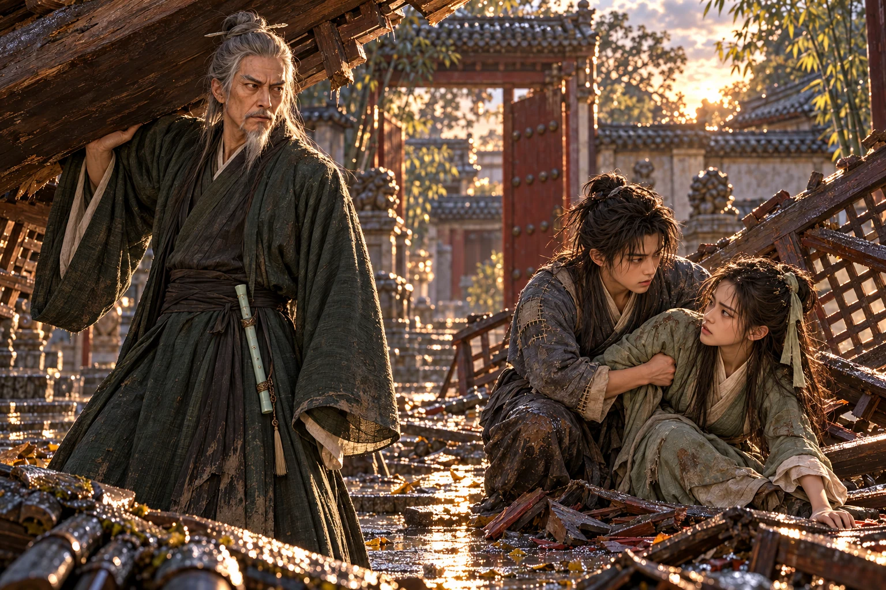

Gelang besi itu masih berputar di lantai ketika mengangkat kepala.
Satu putaran lebar, dua putaran pendek, kemudian benda itu rebah di dekat buntalannya. Bunyinya kecil. Terlalu kecil untuk besi yang baru saja direnggut dari kayu tebal.
Telapak Dani terasa panas. Pasir menempel pada lecet di ruas jarinya. Ia hendak menarik tangan, tetapi masih bertumpu pada lengannya; di sebelah gadis itu, berusaha berdiri sebelum lututnya benar-benar mantap.
menunggu mereka bangkit.
Itulah yang paling membuat Dani takut. Perempuan itu tidak tergesa-gesa.
“Sudah selesai?” tanya Li Mochou.
Dani mengangkat muka. Sepatunya tergelincir sedikit ketika ia mencoba berdiri. Ia membenci bunyi solnya sendiri yang menggesek batu. “Kalau sudah, kami boleh pergi?”
Li Mochou menatapnya sejenak, seolah menimbang apakah pertanyaan itu cukup menarik untuk dijawab. Rambut yang tadi menegang seperti cambuk kini kembali terjuntai lembut. “Kau selalu menjawab sebelum tahu apa yang ditanyakan.”
Wushuang tidak melihat kebut itu. Pandangannya tertuju ke lorong di belakang Li Mochou, ke bagian rumah yang sejak tadi tidak mengirimkan satu pun jawaban. “Ayah!”
Suaranya memantul pada tembok halaman.
“Ibu!” seru Wushuang.
Dani mengikuti arah pandangnya. Dari tempatnya berdiri, ia bisa melihat sepotong serambi depan melalui ambang lengkung. Ada kursi terbalik di sana. Satu tangan terjulur di dekat kakinya, tak bergerak.
Wushuang melihatnya juga.
Ia melangkah maju, begitu mendadak sehingga Cheng Ying gagal meraih ujung bajunya. Li Mochou memiringkan tubuh sedikit. Gadis itu melewatinya tanpa dihalangi.
hampir menyangka mereka diberi kesempatan.
Lalu ia melihat wajah perempuan itu.
Li Mochou sedang memperhatikan dengan saksama. Tidak ada senyum. Hanya perhatian tenang yang membuat Dani ingin menyeret gadis itu kembali, meskipun harus ditendang dan dimaki.
Wushuang berhenti di ambang lorong.
Dari sana, serambi depan terlihat seluruhnya.
Ayahnya berada di dekat kursi terbalik. Ibunya jatuh tidak jauh dari anak tangga, sebelah lengan terlipat di bawah tubuh. Pakaian yang tadi pagi masih bergerak ketika mereka berjalan kini terbentang dengan bentuk yang salah. Tidak ada yang menoleh ketika Wushuang memanggil lagi.
menutup mulut dengan tangan.
Dani tidak bertanya apa yang telah terjadi. Ia mengenali rumah yang mendadak kehilangan suara penghuninya, tetapi pemandangan di depannya jauh lebih kejam daripada kesunyian yang dibawanya sejak pagi.
Wushuang bergerak selangkah, lalu satu langkah lagi. “Ibu, bangun.”
Ucapannya terdengar kesal. Seperti teguran karena seseorang tertidur pada waktu yang tidak semestinya.
menyentuh bahunya dengan ujung gagang . “Mereka tidak akan menjawab.”
Wushuang berbalik.
Gerakannya sama sekali tidak menyerupai jurus. Ia menyerbu dengan kedua tangan, mencoba mencakar wajah yang baru saja mengatakan itu. Matanya terbuka lebar; bibirnya bergetar di atas gigi yang terkatup keras.
“Wushuang!” seru Cheng Ying.
Li Mochou menangkap pergelangan tangan gadis itu.
hanya sempat melihat kaki Wushuang terangkat dari batu. Perempuan itu memutar lengannya, pendek, kemudian melepaskan. Tubuh Wushuang terlempar menyamping dan jatuh di tepi anak tangga.
Bunyi kering terdengar di bawah teriakannya.
mencoba segera bangkit. Kaki kirinya tidak menuruti.
Ia jatuh lagi.
Dani mencapai Wushuang hampir bersamaan dengan Cheng Ying. Gadis itu menepis tangan mereka, bukan karena tidak membutuhkan bantuan, melainkan karena setiap sentuhan terasa seperti gangguan yang tidak sanggup ditanggungnya.
“Jangan pegang!” seru Wushuang.
“Baik. Aku di sini.” berjongkok di sampingnya tanpa menyentuh. Kedua tangannya terbuka di atas lutut, menunggu.
Wushuang menarik napas. Ia mencoba menekuk kaki kiri, lalu berhenti dengan suara tercekat. Wajahnya kehilangan warna. Jari-jarinya mencengkeram tepi anak tangga sampai kukunya memutih.
Dani menahan diri untuk tidak melihat kakinya terlalu lama. “Tangan kananmu. Taruh di bahuku.”
“Aku bilang jangan—” protes Wushuang.
“Aku dengar. Kau yang pegang aku.”
Wushuang menatapnya. Air mata menempel di bulu matanya, tetapi belum jatuh. Sejenak Dani mengira ia akan kembali menolak.
Lalu gadis itu meremas bahunya begitu keras sampai ia meringis.
“Ya. Seperti itu,” kata Dani.
Ia tidak menambahkan apa-apa tentang sakitnya.
Cheng Ying berpindah ke sisi lain. Bersama-sama mereka membantu Wushuang bergeser menjauhi tepi tangga. Tidak jauh, hanya ke batu yang rata. Namun gadis itu harus berhenti dua kali, wajahnya terbenam di bahu agar jeritnya tidak lepas.
membiarkan mereka.
Dani tidak lagi mengira itu pertanda baik.
“Aku bisa jalan,” ujar .
Cheng Ying mengusap rambut yang melekat di pipi sepupunya. “Jangan sekarang.”
“Jangan bilang begitu,” balas Wushuang.
Suaranya mengecil pada kata terakhir. memandangnya, kemudian mengangguk sekali.
“Kita bergerak bersama,” ujar Cheng Ying.
Dani menoleh ke pintu belakang. Celahnya masih ada. Pegangannya telah hilang, tetapi sisi bawah yang mengganjal tadi sudah terangkat sedikit oleh bata. Mereka hanya perlu mencapai pintu itu.
Wushuang mengikuti pandangannya dan langsung menegang. “Ayah dan Ibu masih di sana.”
Dani memandang serambi depan. Ia ingin mengatakan sesuatu yang dapat membuat gadis itu bangkit, sesuatu yang cukup kuat untuk mengalahkan pemandangan di balik lorong.
Tidak ada.
“Aku tahu,” kata Cheng Ying.
Wushuang menoleh tajam kepada sepupunya. Cheng Ying tidak menunduk. Air matanya jatuh diam-diam melewati dagu.
“Aku juga melihat,” ujar Cheng Ying.
Untuk pertama kalinya sejak jatuh, Wushuang berhenti melawan tangan yang menopangnya.

berjalan mendekat. “Yang bermarga Lu, ikut denganku.”
merasakan bahu bergetar di bawah lengannya.
“Aku tidak akan ikut,” kata Wushuang.
Perempuan itu melihatnya dari atas. Tatapannya berhenti pada wajah yang basah, kemudian pada tangan Cheng Ying yang tidak melepaskan tangan sepupunya.
“Masih sanggup membenciku. Bagus,” ujar Li Mochou.
Wushuang menarik tubuhnya maju. Dani menahan bahunya, dan kali ini gadis itu tidak punya cukup tenaga untuk menepis.
“Dia tidak bisa berjalan,” kata Dani.
“Aku melihatnya,” ujar Li Mochou.
“Kalau memang ingin membawanya, paling tidak—”
“Kau sedang mengajariku?”
Dani terdiam.
Perempuan itu tidak memerlukan satu pun alasan yang sedang berdesakan di kepalanya. Tidak perlu diyakinkan bahwa Wushuang kesakitan. Tidak perlu diberi tahu bahwa ayah dan ibu gadis itu masih terbaring di depan. Ia sudah tahu semuanya.
Dani memindahkan tangan Wushuang ke bahu . “Tahan sebentar.”
Cheng Ying memandangnya. Ia menggeleng sangat kecil, seakan telah membaca niat yang bahkan belum Dani susun dengan benar.
Buntalan kelabu masih tergeletak beberapa langkah dari pintu. Ujung simpulnya kotor oleh air. Dani mundur ke arahnya, perlahan, dengan telapak terbuka.
“Barangku. Tadi kau menyuruhku pergi,” ujar .
mengikuti gerakannya. Kali ini ia tidak membantah.
Dani membungkuk dan meraih kain itu.
Ia tahu sepotong bata tidak berguna. Ia telah mencobanya. Namun kain yang terbuka mungkin bisa menutup pandangan, walau hanya sesaat. Cukup untuk Cheng Ying menggeser ke luar. Cukup untuk satu kesalahan kecil dari perempuan itu.
Ia mengendurkan simpul dengan ibu jari.
“Cheng Ying,” panggil Dani.
Ia melempar buntalan itu ke wajah Li Mochou.
Kain kelabu mengembang. Selimut tipis berputar di udara, disusul baju dalam dan kilatan kecil sesuatu yang terlepas dari lipatannya.
Dani menerjang ke arah kedua gadis.
Gagang menyentuh dadanya lebih dahulu.
Udara seolah ditarik keluar dari seluruh tubuhnya. Ia terlempar mundur, menabrak daun pintu yang sudah retak, lalu jatuh melewati ambang.
Pintu itu akhirnya terbuka.
Di luar tembok ada saluran air dangkal yang dipenuhi rumput dan lumpur.
Dani jatuh ke dalamnya dengan bahu lebih dahulu. Air dingin masuk melalui kerah. Ia membuka mulut, tetapi napas yang dicarinya tidak datang. Hanya bunyi serak yang memalukan.
Di dalam halaman, berteriak.
“!”
Ia ingin menjawab. Sebuah suku kata pun tidak keluar.
Di sela daun pintu yang terbuka, ia melihat Cheng Ying berpegangan pada lengan . menarik gadis berbaju merah itu menjauh. Cheng Ying ikut terseret, sol sepatunya menggores batu.
“Lepaskan dia!” seru Wushuang.
Kali ini Wushuang yang berusaha melindungi sepupunya. Ia memukul lengan Li Mochou dengan tangan bebas, pukulan pendek yang semakin lemah setiap kali tubuhnya terguncang.
Li Mochou mengibaskan lengan.
Cheng Ying terlempar ke tiang kecil penyangga serambi. Dani mendengar sambungan kayunya patah. Kisi-kisi di samping tiang roboh, disusul sebagian tepi atap.
Debu menutup pandangannya.
Dani menancapkan kuku ke tanah. Ia harus keluar dari saluran itu. Bibirnya sudah cukup dekat untuk diraih; batu tepinya menekan perut ketika ia mencoba naik.
Dari dalam terdengar suara Li Mochou, tenang seperti sebelumnya.
“Jangan mempersulitnya. Kakimu sudah cukup menyusahkan.”
Wushuang menjawab dengan makian yang pecah menjadi tangis.
Dani akhirnya menarik satu napas. Rasa nyeri menusuk dadanya. Ia batuk, kehilangan pegangan, lalu mencengkeram rumput lagi.
Li Mochou membawa Wushuang melintasi halaman menuju lorong depan. Gadis itu ditopang pada punggung dan lipatan lututnya, dengan kedua kaki menggantung tanpa menapak. Tubuhnya menjauh di sela debu dan kayu yang roboh.
“Wushuang!” panggil .
Suaranya hanya berupa parau pendek.
Gadis itu menoleh. Ia masih bisa mendengar.
Tangannya terulur ke arah pintu, sebentar saja, sebelum membawanya melewati ambang lengkung. Lalu warna merah kesemek itu hilang.

Dani mengangkat satu lutut ke bibir saluran. Ia menarik tubuhnya, terguling di tanah, kemudian berusaha berdiri terlalu cepat.
Langit meredup pada tepi pandangannya.
Ia berlutut lagi, menunggu warna kembali ke tempatnya. Selama beberapa saat ia tidak bisa melakukan apa-apa selain mendengar betapa buruk bunyi napasnya.
Ketika akhirnya ia masuk melalui pintu belakang, Li Mochou telah pergi.
belum.
Gadis itu berada di bawah kisi-kisi kayu, dekat tiang yang patah. Satu bahunya terjepit. Ia mencoba menarik diri, tetapi setiap usaha membuat seluruh rangka di atasnya bergerak.
Dani meraih ujung kayu.
“Jangan dari situ,” ujar Cheng Ying.
Ia berhenti.
“Yang di atas ikut turun,” lanjut Cheng Ying.
mendongak. Balok pendek di bawah tepi atap telah miring, tertahan oleh sambungan yang tinggal separuh. Ia melepaskan kisi-kisi perlahan. “Baik. Aku pindah.”
Suaranya bergetar. Ia berharap Cheng Ying mengira itu akibat batuk.
Ia mencoba dari sisi lain. Kayu bergeser sedikit, lalu nyeri di dadanya memaksanya membungkuk. Cheng Ying melihatnya, melihat tangannya yang masih menekan dada.
“Kau terluka,” ujar Cheng Ying.
“Kau juga. Jadi jangan sibuk mengurusku,” balas Dani.
Ia mengangkat lagi. Tidak cukup tinggi.
“Dani,” kata Cheng Ying.
“Apa?” tanya Dani.
“Aku belum menyuruhmu lebih keras.”
Tangannya berhenti. Gadis itu menunjuk ujung papan yang terjepit di bawah puing.
“Yang itu. Kalau bisa dilepas...” kata .
Ia tidak menyelesaikan kalimatnya. Bibirnya merapat, menahan tarikan napas yang terlalu pendek.
Dani berlutut dan mulai menyingkirkan pecahan genting satu per satu. Gerakannya menjadi tergesa ketika kayu di atas mereka berderak.
Sebuah bayangan jatuh melintasi tangannya.
Lelaki tua itu tidak bertanya apa yang mereka lakukan.
Ia meletakkan satu tangan pada ujung kisi-kisi, mengangkatnya, lalu menyelipkan bahu di bawah balok yang miring. Beban yang tadi tidak sanggup geser kini tertahan cukup tinggi untuk memberi jalan.
“Tarik dia ke sini. Pelan,” ujar .
Dani menatapnya sepersekian detik, kemudian meraih Cheng Ying di bawah lengan yang bebas. Gadis itu menggigit bibir ketika tubuhnya bergeser. Ia tidak menjerit.
Begitu mereka keluar, lelaki itu menurunkan kayu ke tanah. Sambungan terakhir putus. Genting pecah di tempat kepala Cheng Ying berada tadi.

Dani baru melihat wajah penolong mereka dengan jelas.
Tubuhnya jangkung dan kurus, terbungkus jubah hijau tua tanpa hiasan mencolok. Rambut kelabu diikat tinggi; janggut tipisnya telah memutih. Wajah panjang itu menyimpan garis usia yang dalam, tetapi matanya tajam dan sama sekali tidak tampak lelah. Sebuah suling giok terselip pada ikat pinggangnya.
Ia memandang reruntuhan, lalu serambi di depan. Rahangnya mengeras sedikit.
“Siapa?” tanya Huang Yaoshi.
“,” jawab Dani.
Lelaki itu menoleh.
“Itu nama yang disebutnya,” ujar Dani.
“Aku tidak menuduhmu mengarang,” balas Huang Yaoshi.
Ia berjongkok di hadapan dan menyentuh pergelangan tangannya. Dani menunggu. Penantian itu terasa tidak masuk akal ketika sedang dibawa semakin jauh.
“Ada satu lagi. Dia dibawa,” kata Dani.
Lelaki itu tetap memperhatikan wajah Cheng Ying.
“Ke mana?” tanya .
“Lewat depan,” jawab .
“Sesudah gerbang?”
Dani membuka mulut. Ia tidak melihatnya. Ia berada di dalam saluran, berusaha mendapatkan kembali napasnya, sementara perempuan itu memilih jalan yang tidak bisa ia ketahui. “Aku bisa mencari.”
Lelaki tua itu menatap telapak tangannya yang berlumpur, lalu wajahnya.
“Kau baru saja gagal mengangkat kisi-kisi,” kata Huang Yaoshi.
Panas menjalar ke telinga Dani.
“Aku tidak minta dinilai!” seru Dani.
Cheng Ying menyentuh lengan bajunya. Dani menariknya, terlalu cepat. Ia langsung menyesal ketika melihat tangan gadis itu jatuh kembali ke pangkuan.
Lelaki tua itu tidak tersinggung. Itu membuat Dani semakin marah.
“Kau bisa mengangkat semua itu. Kau pasti bisa mengejarnya,” ujar Dani.
“Dan gadis ini kautinggalkan di sini?” tanya Huang Yaoshi.
Dani menoleh kepada .
Ia duduk sangat tegak, seolah dengan menjaga punggungnya tetap lurus ia dapat menyembunyikan sakit. Tetapi setiap beberapa napas, bahunya bergetar. Ada debu di pelipisnya dan pecahan kayu tersangkut pada rambut.
“Sepupuku bernama ,” kata Cheng Ying.
Lelaki tua itu mengangguk sedikit.
“Kaki kirinya terluka. Dia tidak bisa berjalan sendiri. Kalau Tuan mendengar kabarnya...” lanjut Cheng Ying.
Suaranya tersendat. Ia menelan ludah sebelum melanjutkan.
“Tolong jangan lupakan namanya.”
Lelaki itu memperhatikannya lebih lama daripada sebelumnya.
“Lu Wushuang. Aku mendengarnya,” kata .
menggenggam tangannya sendiri. Tidak ada janji bahwa gadis itu akan ditemukan malam ini. Tidak ada kalimat yang sanggup membalikkan apa yang baru terjadi.
Lelaki itu menyuruh Cheng Ying mengatur napas dan memeriksa bahunya. Kemudian ia menoleh kepada Dani, menarik dagu anak itu sedikit untuk melihat wajahnya, lalu melepaskan sebelum Dani sempat mengelak.
“Kau bisa berdiri?” tanya Huang Yaoshi.
Dani segera bangkit.
Ia berhasil. Nyeri di dadanya belum hilang, tetapi ia tidak jatuh.
“Bisa,” kata Dani.
“Berjalan?” tanya Huang Yaoshi.
Dani melangkah dua kali, kaku. Lelaki itu mengamatinya tanpa berkomentar.
“Kalau begitu, ikut. Dia perlu ditolong sebelum malam,” ujar Huang Yaoshi.
Dani memandang pintu belakang. Kain kelabunya tersangkut pada serpih kayu di dekat ambang. Selimut tergeletak jauh dari sana, sebagian masuk genangan.
Ibunya telah mati. Ia sudah tahu itu ketika meninggalkan rumah. Namun memikirkan dan jarumnya terinjak di halaman ini membuat tenggorokannya kembali mengeras.
“Aku harus mengambil barang,” kata Dani.
Lelaki itu menoleh ke arah yang dipandangnya.
“Ambil,” kata .
tidak bergerak. Ia bisa melihat kain, bisa melihat selimut, tetapi benda-benda kecil dari lipatan itu telah berhamburan entah ke mana. “Tidak semuanya kelihatan.”
Lelaki tua itu menarik napas pendek melalui hidung. hendak berdiri, tetapi bahunya langsung terkulai. Ia harus bertumpu pada tangan penolongnya.
Dani melihatnya. Kemarahannya kehilangan tempat berpijak. “Bawa dia dulu.”
“Kau bagaimana?” tanya Cheng Ying.
“Tadi sudah kulihatkan. Aku bisa berjalan.”
Ia berusaha tersenyum. Tidak berhasil benar. Cheng Ying tidak membalas dengan senyum yang dibuat-buat.
“Jangan lama-lama di sini,” kata Cheng Ying.
“Aku tidak berniat membeli rumahnya,” balas Dani.
Begitu mengucapkannya, ia ingin menggigit lidahnya sendiri.
Cheng Ying memandang ke arah serambi depan. Dani menunduk.
“Aku...” ucap Dani.
“Aku tahu,” balas Cheng Ying.
Ia mengatakannya pelan, tanpa menghapus akibat ucapan Dani, tetapi tanpa menambahkannya pula.
membawa Cheng Ying ke bawah pohon di luar pintu belakang. Ia meninggalkannya sebentar di sana, lalu kembali memeriksa serambi depan.
sudah tahu jawabannya sebelum lelaki itu keluar.
Huang Yaoshi menggeleng.
meremas kain di pangkuannya. Kepalanya tertunduk begitu dalam sehingga Dani tidak bisa melihat wajahnya. Ia ingin mendekat, tetapi tidak tahu apakah gadis itu menginginkannya.
Akhirnya ia mengambil kain lebar yang terlepas dari meja di lorong dan membawanya kepada lelaki tua itu. Huang Yaoshi menerima tanpa bicara. Ketika kembali ke halaman, kain tersebut tidak lagi berada di tangannya.
Rumah itu tetap diam.
Di bawah pohon, Cheng Ying mengangkat muka.
“Saya belum berterima kasih,” kata Cheng Ying.
“Kau masih bernapas. Urus itu dahulu,” balas Huang Yaoshi.
“Nama Tuan?”
“Huang Yaoshi.”
Dani menyimpan nama itu bersama satu nama lain yang baru dipelajarinya hari ini. Yang seorang mematahkan kayu untuk mengambil orang. Yang seorang mengangkat kayu untuk mengeluarkannya.
Cheng Ying mengulang nama tersebut pelan. “Kalau saya bisa seperti Tuan...”
Huang Yaoshi mengangkat sebelah alis.
“Tadi saya hanya bisa memegang tangannya,” kata Cheng Ying.
Jemarinya membuka, lalu menutup lagi di atas kain. Ia memandang telapak itu seolah belum mengerti bagaimana tangan dapat terlepas darinya.
“Kau ingin belajar?” tanya .
mengangguk. “Saya ingin bisa menolongnya.”
Lelaki itu menatapnya beberapa saat. Angin menggerakkan ujung janggutnya. Ketika ia berbicara lagi, nadanya tetap kering.
“Ilmuku tidak akan membuatmu sanggup menolong semua orang.”
“Saya tahu,” balas Cheng Ying.
“Belum. Tetapi kau mau belajar. Itu cukup untuk sekarang.”
Cheng Ying hendak membungkuk. Huang Yaoshi menahan bahunya sebelum ia sempat melakukannya.
“Punggungmu baru tertimpa kayu. Simpan upacaramu,” kata Huang Yaoshi.
hampir mendengus. Bunyi itu berubah menjadi batuk, dan ia memalingkan wajah.
Cheng Ying menatap lelaki tua itu dengan mata yang masih basah. “Baik... Shifu.”
Panggilan itu terdengar asing di mulutnya. Huang Yaoshi tidak menolak.
Ia membantu gadis itu bangkit, lalu mengangkatnya agar tidak perlu berjalan dengan tubuh yang masih gemetar. Sebelum berangkat, ia menatap Dani sekali lagi.
“Setelah barangmu terkumpul, tinggalkan tempat ini. Jangan mencoba menyusul dengan tubuh begitu,” ujar Huang Yaoshi.
Dani tidak menjawab.
menunggu sebentar. Ketika tidak mendapat jawaban, ia berbalik.
memandang Dani melewati bahu gurunya. “Terima kasih sudah kembali tadi.”
Dani teringat sumur, cawan yang dingin, dan dua langkah yang sempat diambilnya menuju jalan besar. “Aku tidak berhasil.”
Cheng Ying tidak mengatakan bahwa semuanya baik-baik saja. “Aku tetap ingat.”
Dani mengangkat tangan sedikit. Ia menurunkannya sebelum mereka menghilang di balik rumpun bambu.
Ia menemukan itu di dekat gelang pintu yang terlepas.
Separuhnya tertanam di lumpur. Pada awalnya Dani mengira benda itu batu kecil, lalu cahaya senja menyentuh pinggir logamnya. Ia mengambilnya dengan dua jari dan membersihkan lubang-lubang halus di permukaannya memakai ujung kain.
Tangannya masih gemetar. Bidal itu terjatuh lagi.
memungutnya tanpa memaki.
Jarum ditemukan tersangkut pada lipatan selimut. Benangnya kusut, tetapi belum putus. Ia menggulung semuanya dengan gerakan lambat, memastikan kali ini tidak ada celah yang dapat membuat benda kecil itu lolos.
Untuk saat ini, ia membereskan benda-benda kecil yang masih sanggup dipegangnya.
Kain buntalan robek sedikit di dekat simpul. Dani menggunakan sisi yang utuh, mengikatnya dua kali, lalu duduk di ambang untuk menunggu nyeri di dadanya mereda.
Di dalam halaman, jejak-jejak mereka masih terlihat pada batu yang basah. Bekas seretan sepatu Cheng Ying. Garis panjang dari kayu yang roboh. Satu jejak kecil yang berhenti sebelum lorong.
Dani menatap jejak terakhir itu sampai cahaya tidak lagi cukup untuk membedakannya dari air. “Lu Wushuang.”
Ia mengucapkan nama itu seperti sedang memeriksa apakah ingatannya masih utuh.
“,” kata Dani.
Nama yang kedua terasa berbeda di mulutnya.
Ia tidak bersumpah akan mengalahkan perempuan itu besok. Dadanya masih sakit karena satu gerakan yang bahkan tidak sempat dilihatnya. Tangannya sendiri telah gagal mengangkat kayu. Jika ia mengejar sekarang, mungkin tak seorang pun akan tahu di mana ia jatuh.
Dani mengatupkan rahang. Ia benci mengetahui batas tubuhnya dengan begitu jelas.
Dari depan rumah tercium lagi bau masakan yang tadi membuatnya berhenti di jalan. Sesuatu masih berada di dapur, terlupakan. Perutnya bergerak, tetapi kali ini ia merasa mual.
Ia bangkit sebelum gelap sepenuhnya.
Buntalan kelabu kembali di tangannya. Tambalan pucat pada lengan kiri tertutup debu, dan salah satu benangnya mencuat. Dani menekan ujung benang itu ke dalam, sebuah pekerjaan kecil yang tidak memperbaiki apa pun di sekelilingnya.
Lalu ia melangkahi ambang.
Pintu yang sejak tadi mereka tarik bersama kini terbuka lebar.
Hanya yang melewatinya dengan berjalan.